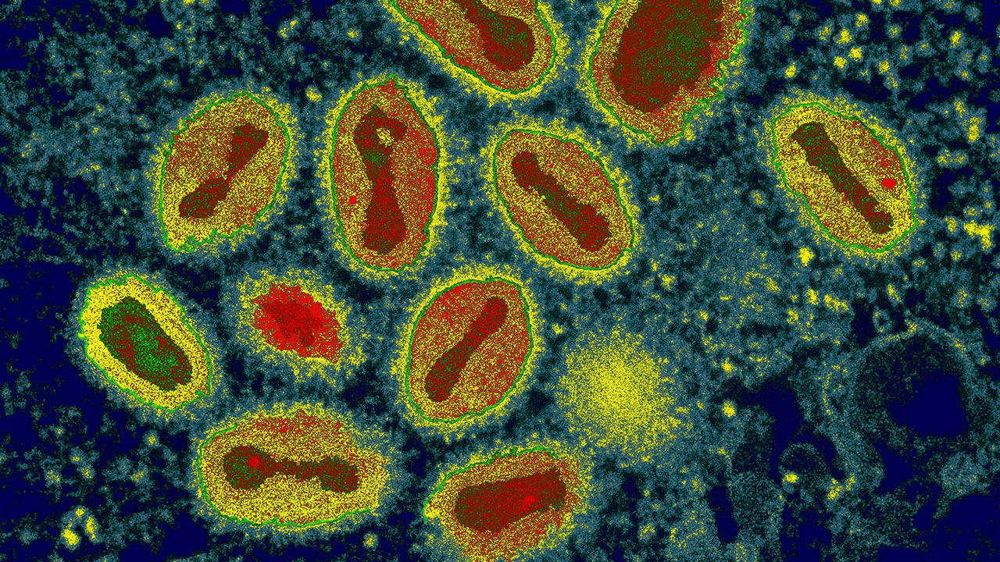
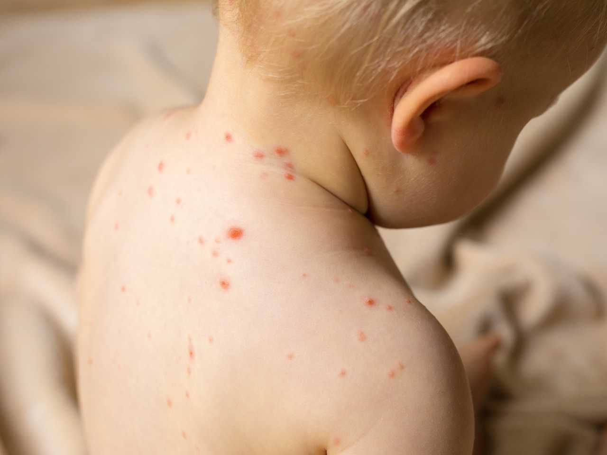
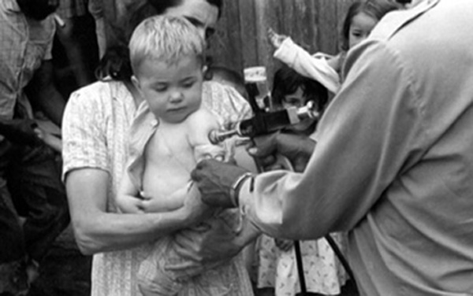
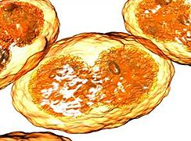
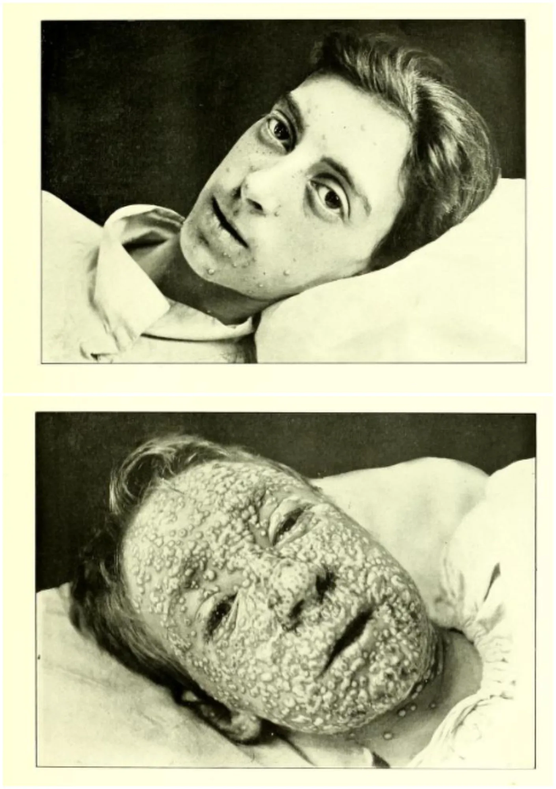
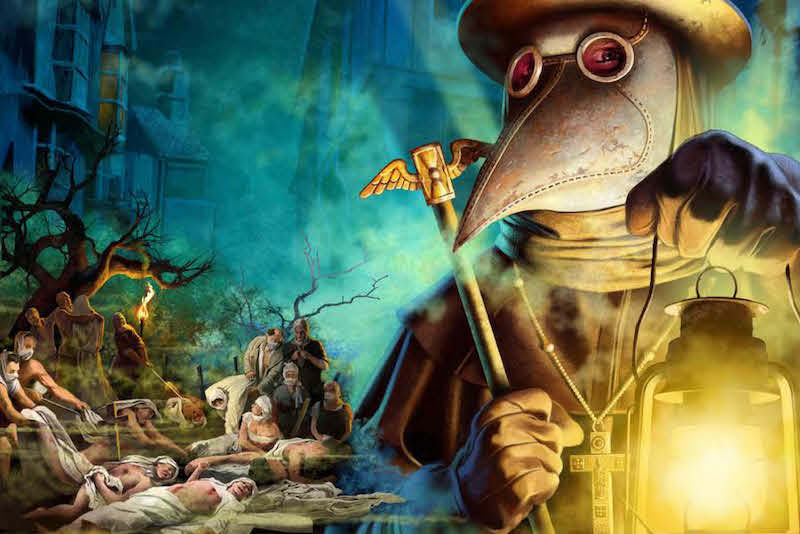
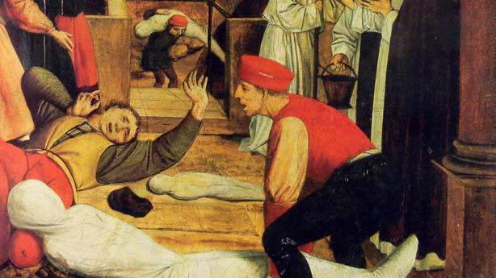

Dünyanın İlk Eradike Hastalığı: Çiçek Hastalığı Nasıl Yok Edildi?
Yüz binlerce insanın ölümüne sebep olan, dünyanın ilk yok edilmiş hastalığı 'Çiçek Hastalığı' ve aşısının tarihine bir göz atmak ister misiniz?
İnsanlık tarihi, yüzyıllar boyunca birçok ölümcül hastalığa tanıklık etti. Yüz binlerce ölümle sonuçlanan bu hastalıklar, en az savaşlar kadar toplumlar üzerinde büyük yıkımlar yarattılar. Bu ölümcül hastalıklardan biri olan çiçek hastalığı, yüz binlerce kişinin ölümüne sebep olsa da, modern tıbba olan etkileri yadsınamaz.
Çiçek hastalığı, her yaşta ve her cinste kişilerde görülen, irinli kabarcıklar dökerek özellikle yüzde izler bırakan, ateşli, ağır ve bulaşıcı bir hastalıktır. Variola da denir.
Çiçek hastalığına yakalanmış Bangladeşli bir kız (1971)
Virüs etkenli bir hastalık olan çiçek hastalığında virüs, ağız ve burun mukozasına yerleşerek üremeye başlar. İnokülasyon süresi 7 ila 9 gündür. Bu süre zarfı içinde belirtiler kendini gösterir. İlk belirtileri olan baş ağrısı, mide bulantısı, kaslarda kırgınlık hissi, yüksek ateş ve üşüme grip virüsüne (influenza) benzese de, hastalığın sonraki aşamalarında deride kaşınmalar başlar ve döküntüler oluşur. Bu döküntüler birkaç gün içinde içi irin dolu, sivilce benzeri kabartılara dönüşür. İlerleyen günlerde, bu kabartılar kuruyarak dökülür ve deride içe göçük yaralara sebebiyet verir. Ağız, burun ve kulak içlerine kadar uzanan bu yaralar, hastanın yaşamsal fonksiyonlarını büyük ölçüde kısıtlar.
Ölüm ise büyük oranda hipotansiyon, kılcal damarlarda pıhtılaşma ve dolaşım sistemindeki komplikasyonlar (dokulara besin ve oksijen taşınamaması, karbondioksit ve metabolitlerin dokulardan uzaklaştırılamaması) sonucu olur.
Çiçek Hastalığının Etkeni

Çiçek hastalığı, variola (orthopoxvirus) adı verilen genetik materyali çift sarmallı DNA olan bir virüsün sebep olduğu ölümcül bir hastalıktır. Variola virüsü en büyük virüslerden biridir ve doğru ışık kullanımıyla ışık mikroskobunda görüntülenebilir. Virüs, hücreye endositoz yoluyla bulaşır. DNA replikasyonu, konak hücrenin enzimlerine bağlı kalmadan gerçekleşir çünkü variola kendi replikasyon ve transkripsiyon enzimlerini içerir. İmmunsupresif proteinler üreterek bağışıklık sisteminin verimli çalışmasına engel olur. Bu immunsupresif proteinlere CrmB örnek gösterilebilir.
Hücre dışında faaliyet gösteren bir sinyal proteini olan TNF (tumor necrosis factor), hücrede bağışıklık düzenleyici olarak görev yapar. TNF, CrmB proteininin kendisine bağlanmasıyla etkisiz hale gelir. Bağışıklık sisteminin inhibe olması sonucu, virüs derideki kılcal damarlara yerleşerek damarları şişirir. Damardaki komplikasyonlar deride püstül adı verilen kabuklar oluşmasına sebep olur.
Hastalığın Tedavisi ve Aşısının Bulunması
Yüz binlerce insanın ölümüne yol açan çiçek hastalığının önüne geçebilmek adına insanlar, birbirinden farklı yöntemler deneyerek bir çare arayışı içine girdiler. Çinliler, derideki kabukların döküntülerini toz haline getirerek soluma veya burun içine sürme vasıtasıyla bağışıklık kazandılar. Afrika’da, kabuklardan alınan döküntüler derideki bir kesiğe ovularak sürülüyordu. Türkiye’de ise bu işlem, derideki sivilce benzeri yapı kurumadan önce içinden alınan irin ile yapılıyordu. Büyükçe bir iğnenin ucu bu irine bulanarak sağlıklı bireye batırılıyordu.
1716’da, Türkiye’ye elçi olarak gönderilen kocasıyla birlikte İstanbul’a gelen Lady Mary Wortley Montagu, Türkiye’deki bu inokülasyon işleminden çok etkilenip Avrupa’da da uygulanmasına öncü olmuştur.

Çiçek hastalığının kökünden bitirilmesi, Doktor Edward Jenner’ın 20 yıllık gözlem ve emeğinin sonucudur. Jenner, ineklerin memelerinde oluşan kabartılar ile kendini gösterip kısa sürede geçen inek çiçeği hastalığına yakalanan insanların, çiçek hastalığına dirençli olduğunu gözlemledi. İnek çiçeği hastalığına yakalanan bir kadının derisinden alınan irini bir çocuğa enjekte etti. Sonrasında aynı çocuğu çiçek virüsü enjekte etti ve çocuğun çiçek hastalığına karşı bağışıklığı olduğunu fark etti.
İnek çiçeği virüsü, çiçek virüsüne oranla daha hafif semptomları olan bir virüstür. Jenner, 1796 yılında inek çiçeği virüsünden elde ettiği aşıyla birlikte, sağlıklı bir insanı hafif şekilde hasta ederek çiçek virüsüne karşı bağışıklık kazanmasını sağladı.
Tarihteki ilk aşı, çiçek aşısıdır. Hatta aşı anlamına gelen vaccine, ‘vacca’ kelimesinden gelmektedir. Vacca, Latince’de inek demektir. Günümüzde, aşı sayesinde çiçek hastalığının kökü tamamen kazınmıştır ve bu teknik birçok hastalığa da çare olmuştur.
Bilimle kalın.

Genel özellikler
Büyüklük: 300 x 250 x 200 nm[1]
Genom yapısı: Çift iplikli DNA
Morfoloji: örtülü
Konak: Omurgalı ve omurgasızlar

Sınıflandırma
Baltimore sınıflandırması
Grup I: dsDNA virüsleri
(çift iplikli DNA virüsleri)
UVTK sınıflandırması
Familya: Poxviridae
Cins: Orthopoxvirus
Tür: Variola vera
Bunlar da İlginizi Çekebilir


